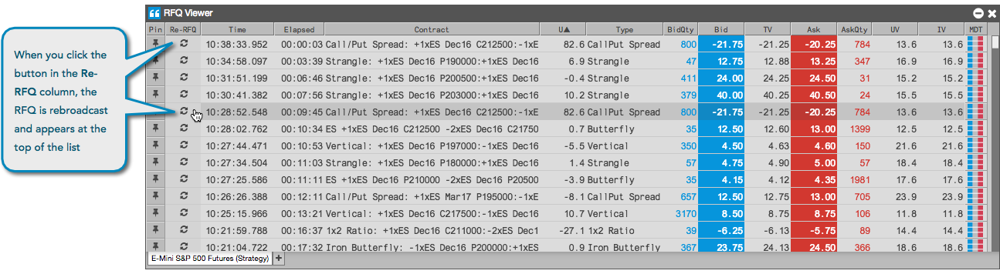

You can show interest in a previously submitted RFQ for an instrument by resending the RFQ to all market participants. When you resend the RFQ for an instrument, it reappears at the top of the list in the RFQ Viewer.
To resend an RFQ, select an instrument row in the RFQ Viewer and click the button in the Re-RFQ column. The RFQ is resent and the instrument appears at the top of the list in your viewer.
